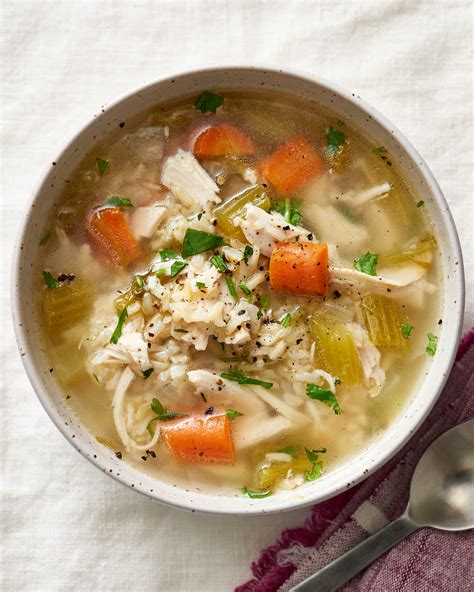

Soup

What does it mean to make Soup?
When I was a young lad, I always thought that soup was just a food. Now that I am older, I realize just how wrong I was.
To truly understand soup, one must first look to the skies and ask, "Who am I?" Yes. Who are you?
Here's what you'll need:
- soup
- the will to live
- just a BUTT ton of gravy (to snack on later)
And here's how to make it:
- Give up everything you know. Everyone you've ever loved? Dust.
- Repent.
- Make some soup, fuggetaboutit!